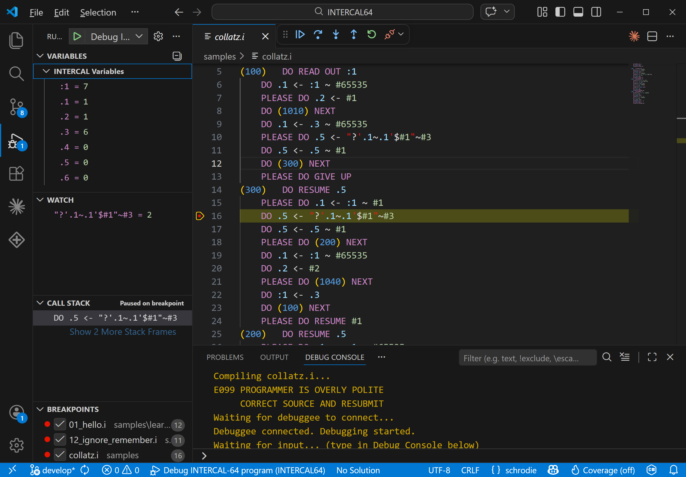
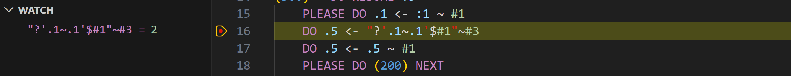
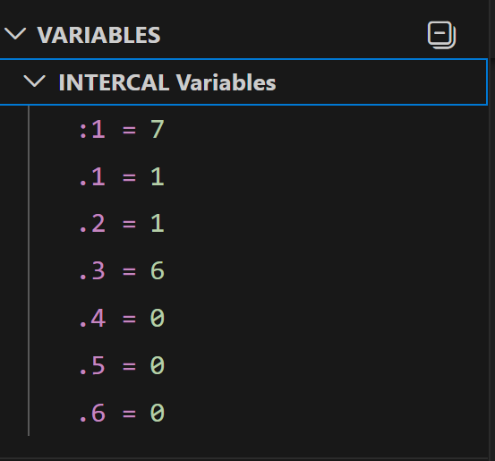
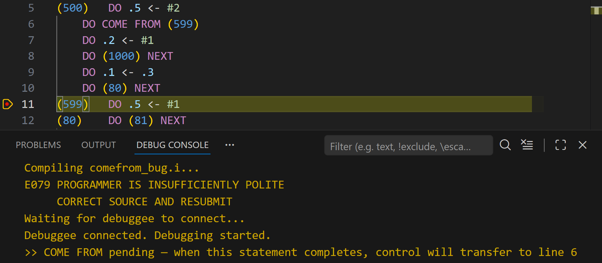
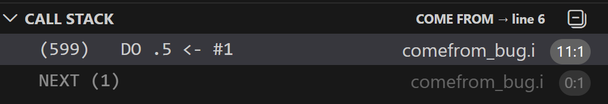

The First INTERCAL Debugger
In over fifty years of INTERCAL's existence, no one has been able to step through a program and watch it execute. Until now. INTERCAL-64 ships with a full Debug Adapter Protocol (DAP) debugger for Visual Studio Code.

The full debugging experience: variables, watch expressions, call stack, breakpoints, and source — all live.
Features
Breakpoints and Stepping
Set breakpoints on any INTERCAL statement. Step In, Step Over, Continue. The debugger maps generated code back to your source lines so you always know where you are.

Paused on a breakpoint. The watch panel evaluates '?'.1~.1'$#1"~#3 in real time.
Variables Panel
Every spot, two-spot, four-spot, and array variable updates in real time as you step. Watch values change after each assignment. See arrays expand as you dimension them.

Spots and two-spots update live as you step through the program.
Watch Expressions
Type any INTERCAL expression in the watch panel and see it evaluate against the current program state. Finally understand what '?"'.3~.3'~#1"$#1'~#3 actually produces.
ABSTAIN Tracking
The Gerund State panel shows which statements are currently abstained and which are active. Watch statements go dark as you ABSTAIN FROM CALCULATING and light back up when you REINSTATE.
COME FROM Visualization
The debugger marks COME FROM targets in your source. When a trapdoor fires and control jumps to a COME FROM, the debugger shows you exactly where you came from and where you're going.

"COME FROM pending — when this statement completes, control will transfer to line 6." You can see it coming but you can't stop it.

The call stack shows the COME FROM target and the NEXT stack depth.
The AI Agent
The debugger watches what you do and comments on it. Evaluate a simple expression and it says "EVEN A COMPILER COULD DO THAT". Write something deeply nested and it says "THE COMPILER WEEPS". Trigger a COME FROM and it says "YOU DIDN'T JUMP. YOU WERE PULLED."
The commentary scales with complexity:
| Complexity | Example Response |
|---|---|
| Simple (variable lookup) | CONGRATULATIONS ON READING A SINGLE VALUE |
| Moderate (1-2 operators) | I WOULDN'T HAVE DONE IT THAT WAY BUT YOU DO YOU |
| Complex (deeply nested) | ABANDON ALL HOPE YE WHO PARSE THIS |
| COME FROM fires | CONTROL FLOW IS A SUGGESTION |
| ABSTAIN FROM gerund | YOU JUST DISABLED SOMETHING. I HOPE IT WASN'T IMPORTANT. |
| REINSTATE gerund | OH SO NOW YOU WANT IT BACK |
| 1-in-50 easter egg | HAVE YOU CONSIDERED A CAREER IN MANAGEMENT |
The agent cannot be disabled. This is a feature.
Debug Console
Program output appears in the debug console in real time. WRITE IN works — you can interact with your running program. READ OUT values appear as they're computed.
Getting Started
Install the VS Code extension, open any .i or .ic64 file, set a breakpoint, and press F5. The learn-intercal samples are designed specifically for this — open lesson 01, hit F5, and start stepping.